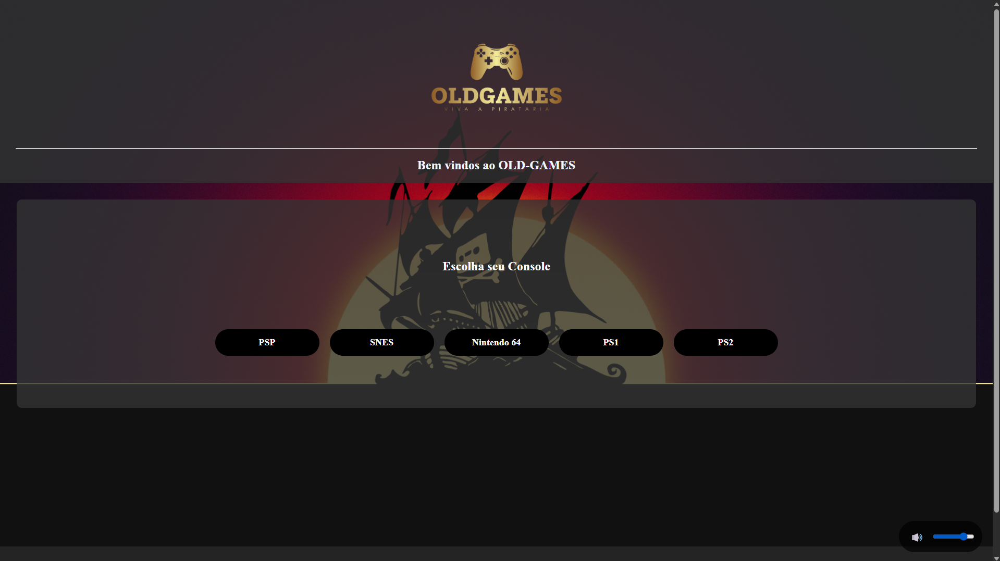
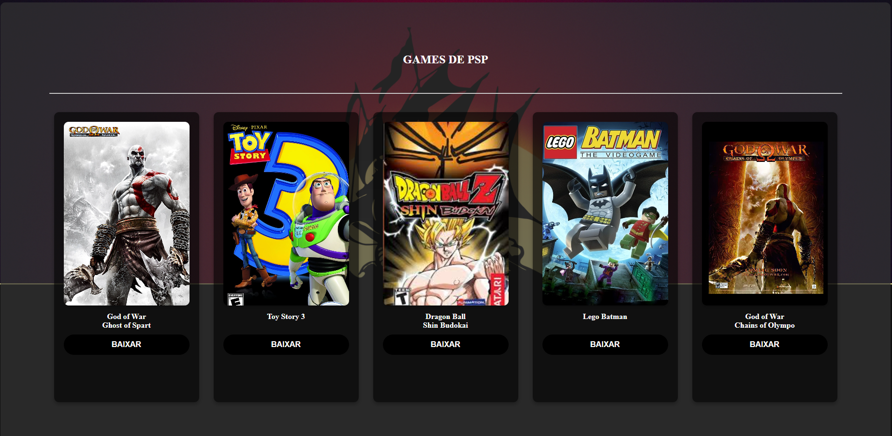
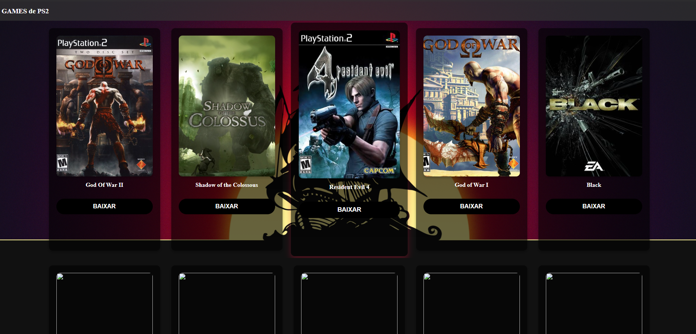
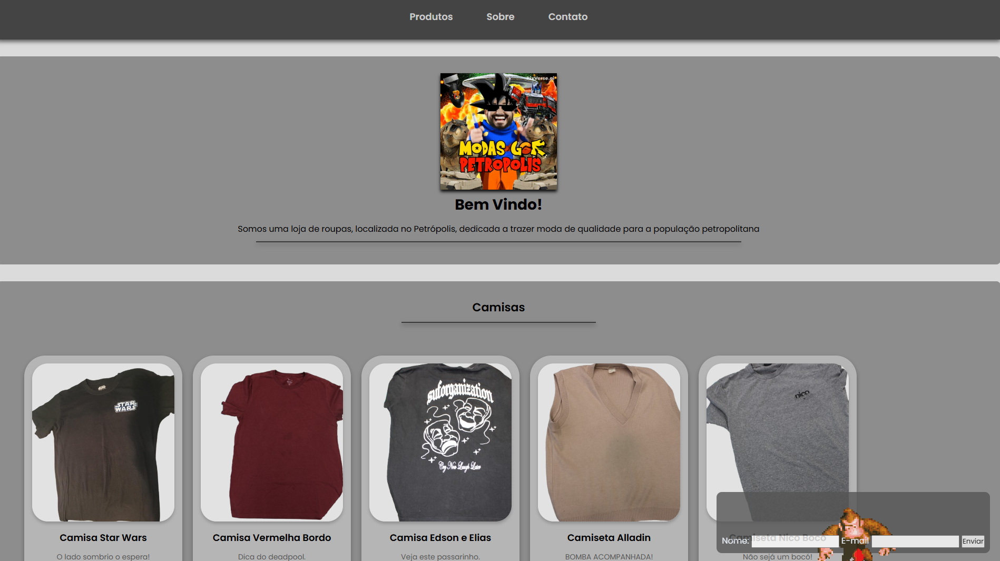
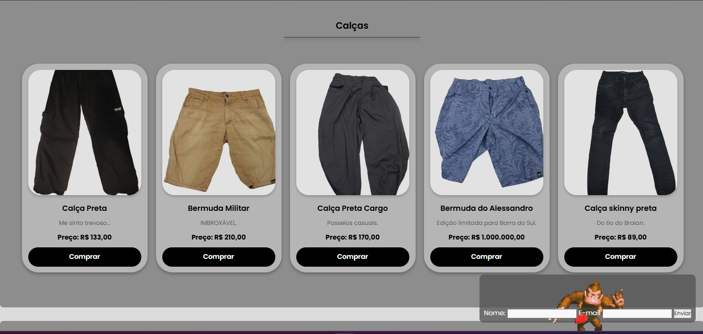

OLD-Games
Um projeto de site que simula ser uma loja de jogos online, um projeto que ainda está em andamento e
não finalizado
Mas que quando concluido estará funcional para acessar uma biblioteca de jogos antigos

Página inicial da loja

Página da área de jogos de PSP

loja de PS2
Loja de Roupas
A moda do Petrópolis é uma loja online ficticia que está associada com a aula de
matemaica onde foi calculado quantas possibilidades de combinações diferentes são
possíveis com determinado numero de roupas


Tchuu-Tchuu
Projeto para Desenvolver Aplicativo/Site de serviço monitoramento de Trens
Chat-Funcional
Esse projeto se propoem a desenvolver um chat em grupo